MEB with consents: figures by dataset
Incremental vs decremental algorithms: maps per consent threshold, number of consent requests, and run time. Click a figure to open it full size.
Amsterdam Airbnb
Branch airbnb-review-consent-viz. Consent: number_of_reviews ≥ k (main), availability_365 ≥ k (alternative). 10,480 listings, 2D in km.
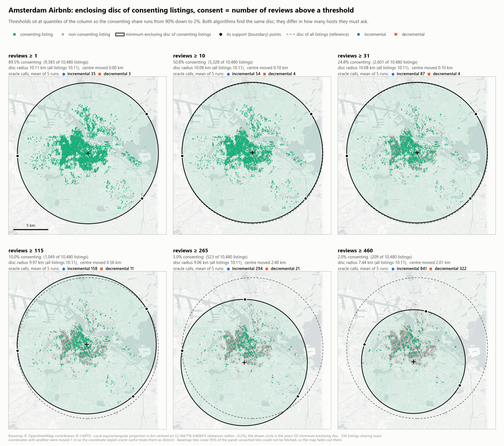
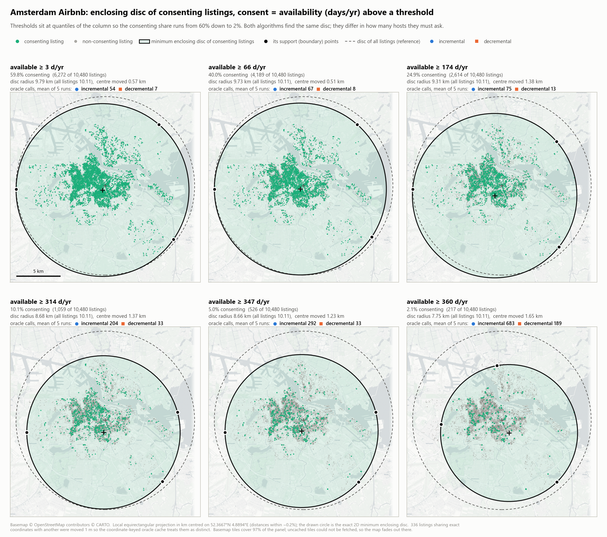
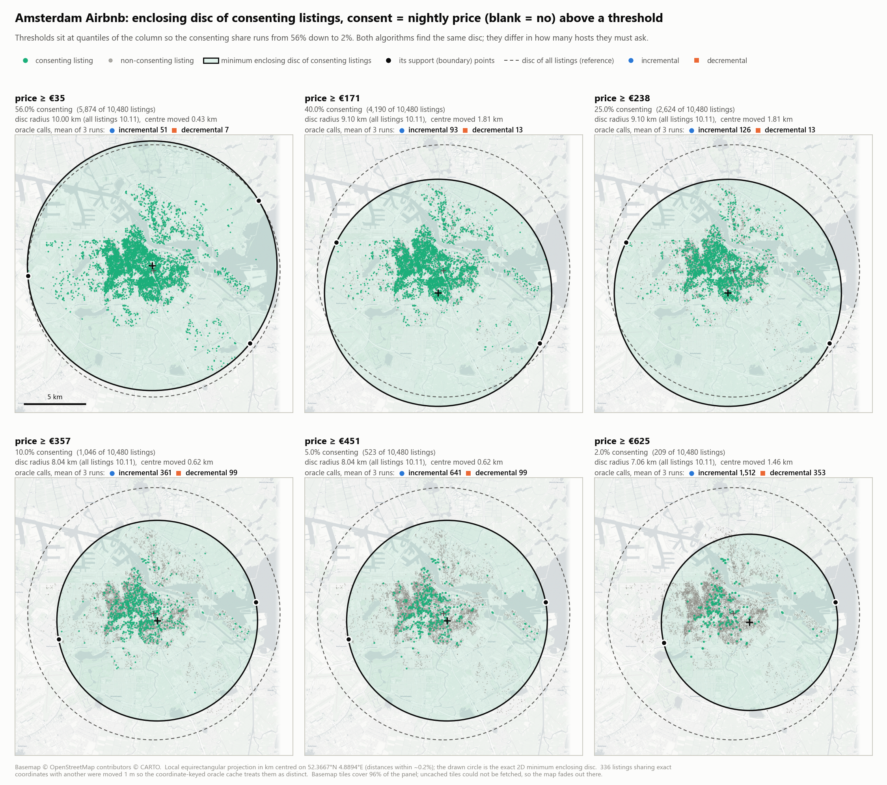
Chicago crimes
Branch crime-consent-viz. Consent: DISTRICT ≤ k (main, clustered), TIMESTAMP ≥ t (contrast, spatially random).
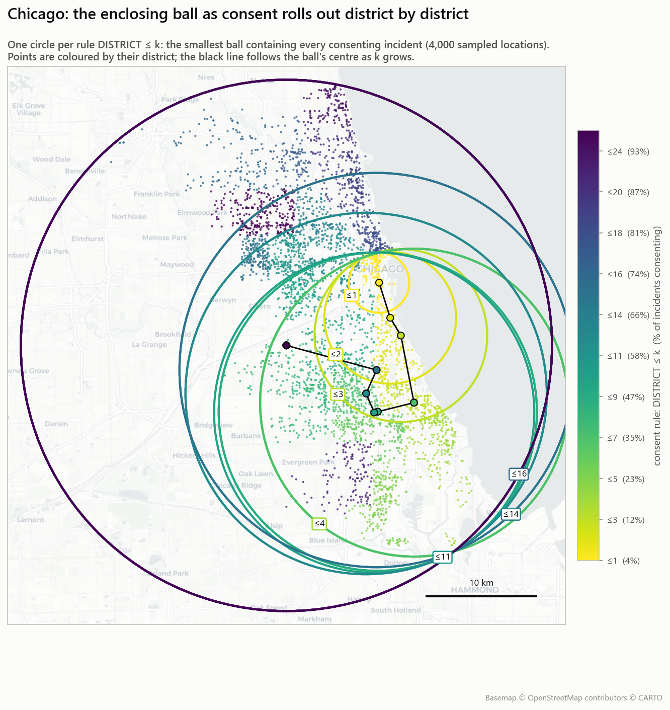
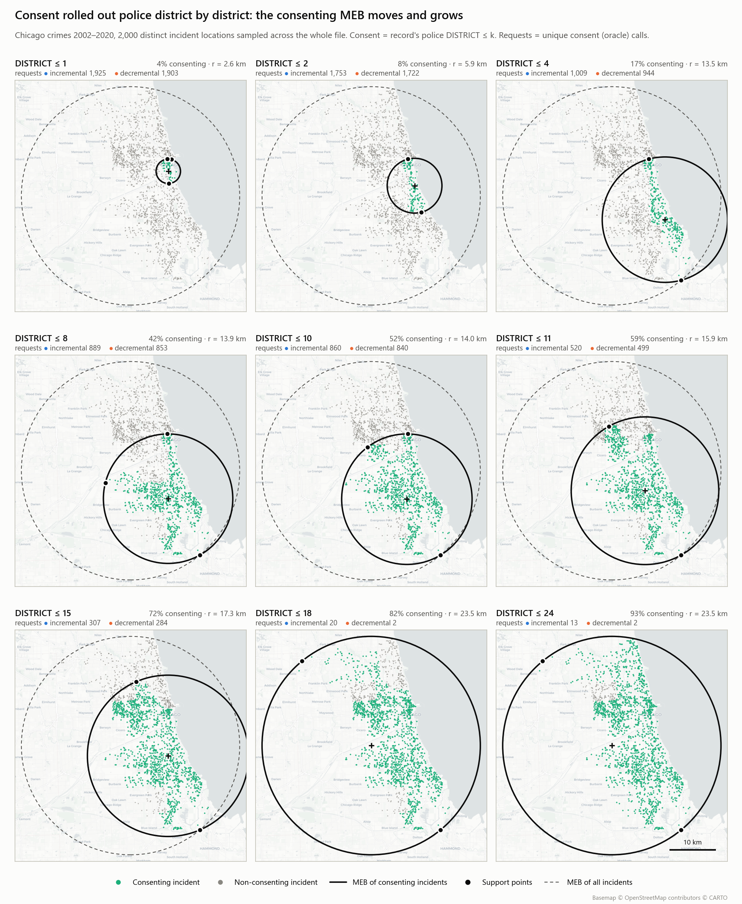
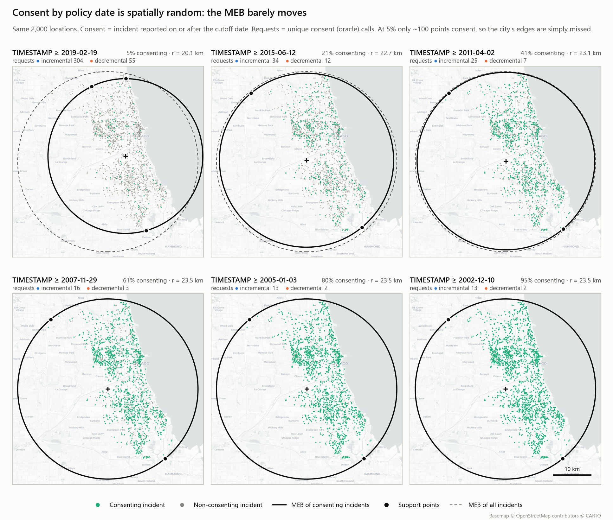
ADS-B flights (one Wizz Air aircraft, 2016–2019)
Branch flight-consent-viz. Consent: opt-in date per flight leg (main).
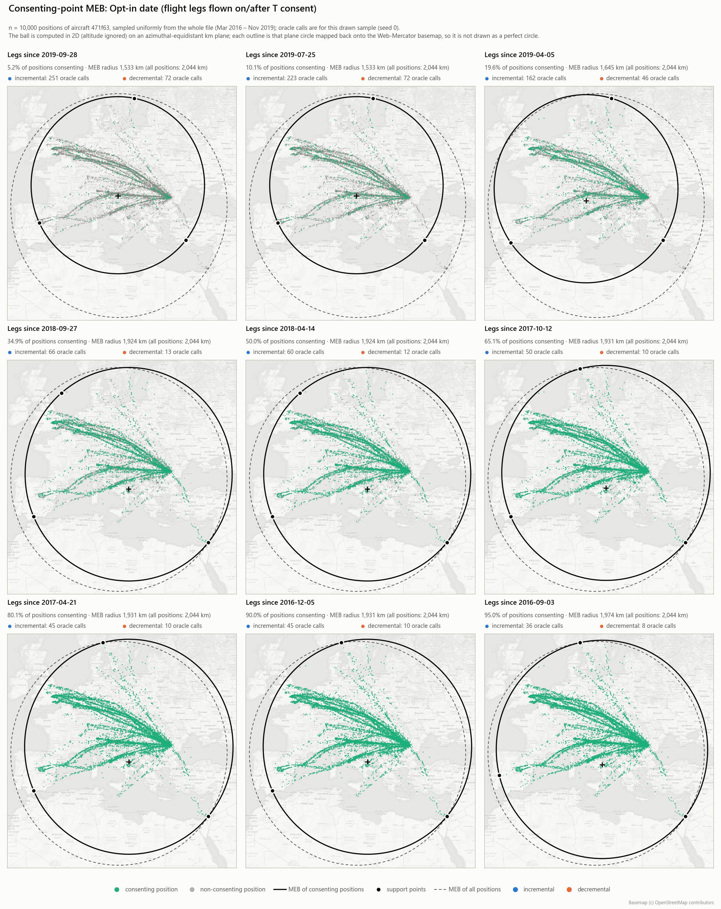
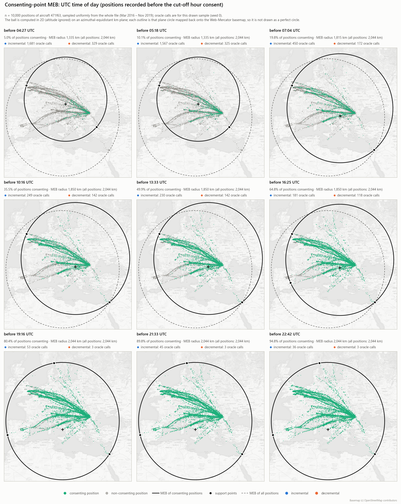
Credit-card transactions
Branch paper-datasets-viz. Card transactions made by European cardholders over two days in September 2013 (the public “Credit Card Fraud Detection” dataset, 284,807 rows). Each point in the figure is one transaction; 5,000 are drawn.
- V1 and V2 (the two axes)
- The dataset does not publish the original transaction details, for confidentiality. Instead it gives 28 anonymous numeric columns, V1 to V28, produced by a principal component analysis (PCA) of those hidden details. V1 and V2 are the two components that capture the most variation, so they are the best available 2D picture of how transactions differ from each other. They have no direct real-world meaning such as “price” or “location”.
- z-score (the axis units)
- Each axis is rescaled as (value − average) ÷ standard deviation. So 0 is an average transaction, +2 is two standard deviations above average, and −5 is a strong outlier. This puts V1 and V2 on the same scale, so distances and the enclosing ball treat both axes equally.
- Consent values (t)
- Consent is decided by the transaction’s Amount in euros, the one column the dataset leaves untransformed. A transaction consents if its amount is at most t: the story is that cardholders are willing to share small purchases but not large ones. The five panels use t = €0.98, €3.99, €23.70, €103 and €374, chosen so that about 5%, 20%, 50%, 80% and 95% of transactions consent.
- Reading a panel
- Green points consent, grey points do not. The thick circle is the smallest ball containing every consenting transaction; the thin grey circle is the ball around all transactions. “inc” and “dec” are the number of consent requests the incremental and decremental algorithms made.
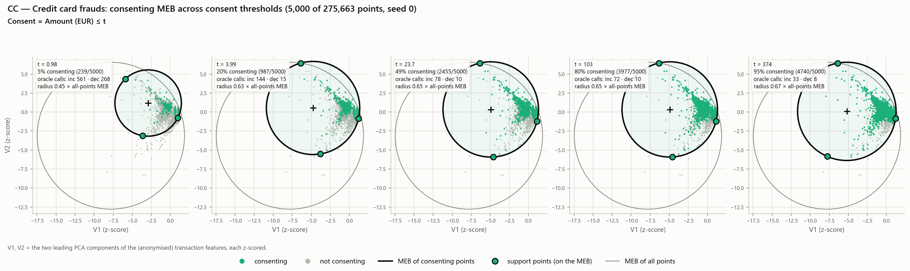
Spotify tracks
Branch paper-datasets-viz. Consent: popularity ≥ t. Plane: valence × energy. Uses the minimum-enclosing-box algorithms (incremental_orthogonal / decremental_orthogonal) instead of the ball.
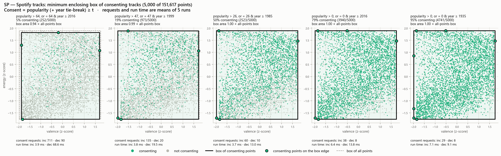
US mutual funds
Branch paper-datasets-viz. Consent: total net assets ≥ t. Plane: 3-year volatility × 3-year return.
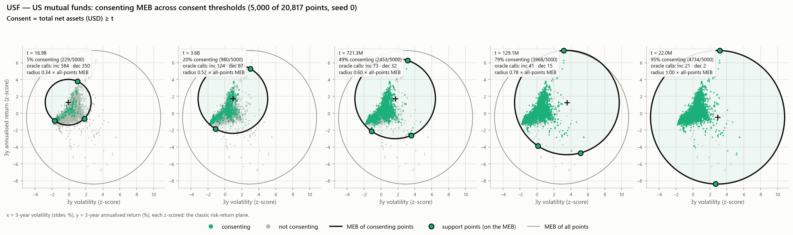
Bank loans
Branch paper-datasets-viz. Consent: loan amount ≤ t. Plane: log income × debt-to-income ratio.
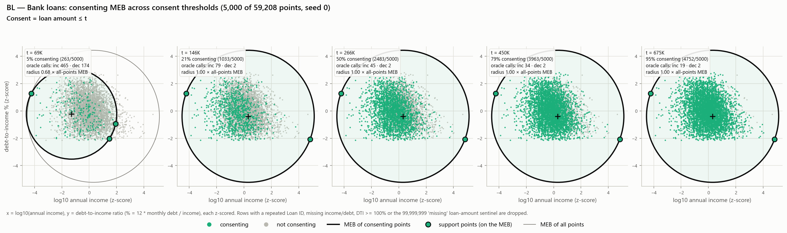
US airports (flight delays)
Branch paper-datasets-viz. Consent: January cancellation rate ≤ t. 284 airports, in km.
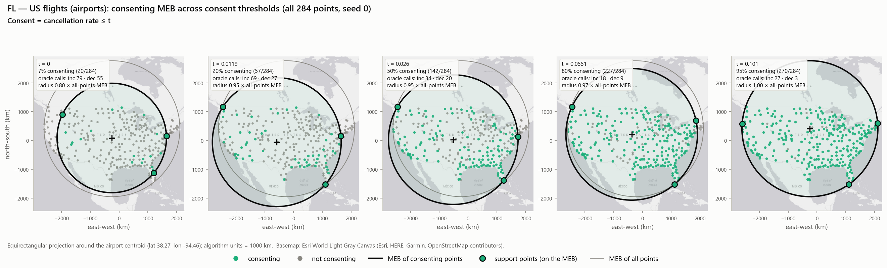